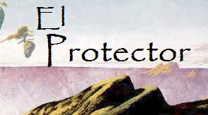

Una Fábula Ecológica Breve
Vota en su Ficha en el CAAD
|  | El Protector Una Fábula Ecológica Breve Vota en su Ficha en el CAAD |
| INTRODUCCION | INSTRUCCIONES | AYUDA | RELATO INTERACTIVO | CRITICAS Y COMENTARIOS | OTROS RELATOS |
Pueden hacer llegar sus comentarios a mi correo público en sarmasm@yahoo.com o bien a través del foro del CAAD; usa preferentemente el hilo con la noticia de publicación del juego.
Si quieres conocer mis otras creaciones y proyectos de Ficción Interactiva, visita mi página web.